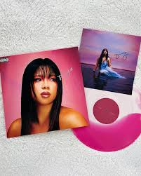
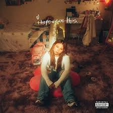
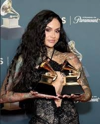
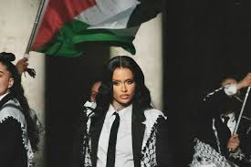
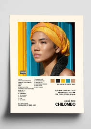

my inspirations
I am inspired by:
Thuy


She is a Vietnamese-American R&B singer and songwriter. She is from Newark, California. I enjoyed her music album called I Hope You See This. in 2021, and after that, I continued listening to her music. Her Girls Like Me Don’t Cry album was what resonated with me as a sensitive person like her. What inspires me is her authenticity and humbleness through her music. She would talk about her family, her roots & culture, which motivated her to seriously pursue music because of her community. She played in Coachella in 2024, which was so moving and inspirational. She advocates for the Asian-American community and shares her reasons why she does what she does. She is very passionate about her role as an artist and being an important figure/being influential.
Kehlani


She is an American R&B singer, songwriter, and activist. She is from Oakland, California. Her songs are primarily focused on R&B, Neo-soul, and Pop genres. The reason why she inspires me is her urgency, with no hesitation in speaking about what she believes in. Which is why her use of her platform to discuss the crucial topics is so inspirational. She voiced her support for LGBTQ+ rights, Palestinian liberation, racial justice, etc. She continues to do so, even recently at the 2026 Grammys after winning two awards as Best R&B Performance and Best R&B Song for her hit single Folded. She also showed her support through her music video Next 2 U for advocating Palestine. She is very influential in what she is passionate about, and I think that it is amazing what she has done for communities that need their voices heard.
Jhené Aiko

She is an American singer, songwriter, and musician. She is from Los Angeles, California. She has made a real impact by being open and honest about emotions that a lot of people struggle to talk about, like heartbreak, healing, and mental health. What inspires me is through her music because she creates a safe space for listeners to feel understood about self-love and growth. Her music is calm, emotional, and personal. Her authenticity and energy make her inspirational. She stays true to herself in an industry that often pressures artists to change, reminding people that it is okay to normalize mental health discussions. Her album Chilombo showcases that. She spoke at the Didi Hirsch Mental Health Is Health campaign in 2022 and was named an Ambassador.